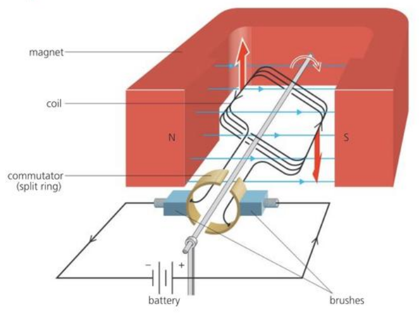
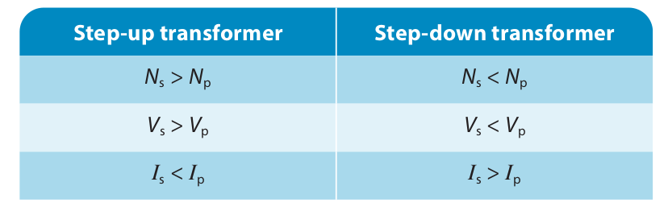

### 8.1 ELECTRICITY: Electric Charge
* An electric charge is like *a little droplet of electricity*
* There are **positive** and **negative** charges
* Like charges repel and unlike charges attract
* The electric charge has the symbol $Q$
* the SI unit of charge is $1\\; C$ (one coulomb)
* A body has a charge of $1 \\;C$ if it has an electron excess of $6.24 \times 10^{18}$ electrons.
8.1 ELECTRICITY: Electric Charge
Question: Where do charges come from?
Positive charge comes from (heavy) protons and negative charge comes from (mobile) electrons.
### 8.1 ELECTRICITY: Electric Charge
##### The Sweater and Balloon Experiment
[https://issr.edu.kh/science/Webpage/phet/balloons-and-static-electricity_en.html](https://issr.edu.kh/science/Webpage/phet/balloons-and-static-electricity_en.html)
* If you rub a balloon on clothes, it becomes charged with static electricity.
* Electrons are transferred to the balloon and it becomes negatively charged
* The negatively charged Balloon sticks to the wall: it repels the electrons and is then attracted to the positive charge
### 8.1 ELECTRICITY: Electric Charge
* Some materials have their electrons knocked off more easily than others, these are known as **conductors**
* Other materials tightly grip on to their electrons and don't let go. These are called **insulators**
* Some materials have properties in between a conductor and an insulator. These materials are known as **semi-conductors**.
Good conductors like copper have electrons that easily move through their structures, while insulators do not have mobile charged particles.
### 8.2 ELECTRICITY: Electric Charge
* The ground below our feet may be thought of as a good conductor
* It has an infinite capacity and supply for electrons
* When you want to safely discharge a charged body
* you connect it to the ground
* the electrons flow between the ground and the body cancelling the charge
* This process is called *Earthing*.
### 8.2 ELECTRICITY: Electric Charge
* You can get a static charge on an object in 3 ways:
* **Friction:** When two different insulating materials are rubbed, electrons get transferred from one body to another. e.g. a sweater and balloon
* **Conduction:** charging an uncharged material by bringing it into touch with some other charged material.
* **Induction:** charging without any actual contact with a charged body.
The field lines are in the direction a small positive test charge will move towards the body.
This is just convention.
8.3 ELECTRICITY: Electric Fields
8.3 ELECTRICITY: Electric Fields
### 8.4 ELECTRICITY: Current in a simple circuit
* An electric current is a steady flow of electrons in a particular direction.
* If charges are like droplets, then a current is a like a stream
* The SI unit of current is the Ampere ($A$).
> **Definition of Current:** An electric current is defined as the charge passing a point per unit time
### 8.4 ELECTRICITY: Current in a simple circuit
> $$ \text{current} = \frac{\text{charge}}{\text{time}}$$
> or
> $$ I = \frac{Q}{t}$$
$1 \\;A$ is the current when $1\\;C$ of charge moves across a point in $1$ second.
### 8.4 ELECTRICITY: Current in a simple circuit
**Question:** What is the definition of $1\\;C$?
$1\\;C$ is defined in terms of current using the equation $Q = I \times t$.
This is done because current is much more frequently used in engineering than static charge.
$1\\;C$ is the amount of charge passing a point over $1\\;s$ in a circuit with $1\\;A$ of current.
8.4 ELECTRICITY: Current in a simple circuit
Electrons flow from the negative terminal of the cell to the positive
Current flows from the positive terminal to the negative terminal. This is just convention.
### 8.4 ELECTRICITY: Current in a simple circuit
**Workbook 8.4, 1.c.i**
A current of $2.0A$ flows in a circuit. How much charge passes a point in the circuit in $10s$?
**Workbook 8.4, 1.c.ii**
Calculate the charge passing a point in a circuit in $3s$ if the current flowing is $10mA$.
**Workbook 8.4, 1.c.iii**
How much charge passes a point in a circuit in $30$ minutes if the current flowing is $0.05A$?
### 8.4 ELECTRICITY: Current in a simple circuit
**Workbook 8.4, 1.c.iv**
How much current is flowing in a circuit if $120C$ of charge passes a point in $1$ minute?
**Workbook 8.4, 1.c.v**
What is the current flowing in a circuit if $18mC$ pass a point in $6$ seconds?
**Workbook 8.4, 1.d**
A student is tring to understand current flow. She cannot work out why there is no delay between closing a switch in a circuit and the bulb lighting. Write an explanation to help her understand why the bulb lights immediately.
8.5 ELECTRICITY: Potential Difference
Rivers flow from the mountains to the sea under the effect of gravity.
To be more precise, water in rivers flow from an area of higher potential energy to an area of lower potential energy.
8.5 ELECTRICITY: Potential Difference
The flowing water in rivers have kinetic energy, what we experience as water pressure
A water wheel consumes the kinetic energy of flowing water to do useful work
### 8.5 ELECTRICITY: Potential Difference
* **Potential Difference** or **Voltage** is a measure of how much energy is transferred from electrical charges to the components of the circuit.
* The SI Unit of potential difference is **Volts** ($V$)
* Potential difference in an electric circuit is like pressure difference in water
Without voltage, free electrons move around randomly. With voltage, all the free electrons move in the same direction, causing current.
> **Definition of Potential Difference:** Potential difference is the work done by a unit charge passing through a component.
### 8.5 ELECTRICITY: Potential Difference
> $$ \text{Potential Difference} = \frac{\text{Work Done}}{\text{Charge}}$$
> or
> $$ V = \frac{W}{Q}$$
A potential difference of $1\\;V$ between two points means that $1\\;J$ of energy is transferred to/from $1\\;C$ of charge moving between the two points
Cells or batteries add energy to the electrical charge, but most other components of a circuit take energy from the electrical charge.
8.5 ELECTRICITY: Potential Difference
Before a dam is opened, water accumulates to the maximum possible amount. All this water builds up potential energy waiting to do work once the dam is released.
Similarly, a cell which is not connected is waiting to do work. It builds up all its energy as potential.
### 8.5 ELECTRICITY: Potential Difference
* The potential difference across a cell is highest when it isn't connected in a circuit. This maximum potential difference is called the **electromotive force** (**emf**) of the cell
* The emf is measured in Volts (because it is stored up potential difference)
> **Definition of emf:** The emf is the work done per unit charge by the cell to drive charge around a complete circuit (including the cell)
Potential Difference is measured in a circuit using a Voltmeter
Note: A voltmeter is connected in parallel.
### 8.5 ELECTRICITY: Potential Difference
**Workbook 8.5, 1.b**
Three cells each of e.m.f. $1.5V$ are joined in series as shown. What is the total e.m.f. that they can supply?
**Workbook 8.5, 1.c**
In the space below, draw a circuit containing three identical bulbs in series and a batter of $6V$. Indicate the potential difference across each bulb.
**Workbook 8.5, 2 (Extension)**
What is the effect of adding cells in parallel on the potential difference and current in a circuit?
### 8.6, 8.7 ELECTRICITY: Resistance
* Electrical resistance is a measure of how difficult it is to pass an electric current through something.
* The SI Unit of resistance is the **ohm** ($\Omega$)
* For example:
* Copper has a low resistance since it has a loose hold on its electrons
* Nichrome has a higher resistance than copper so less current flows for the same voltage.
### 8.6, 8.7 ELECTRICITY: Resistance
* The resistance of a component may change for a number of different reasons.
* Length
* Cross-sectional area
* Temperature
* A component which is designed to have a certain resistance is called a **resistor**.
* A resistor uses the energy in the electrons flowing across it to do the work of *heating up*.
8.6, 8.7 ELECTRICITY: Resistance
### 8.6, 8.7 ELECTRICITY: Resistance
* For a constant potential difference: more resistance means less current
* For a constant resistance: more potential difference means more current
* For most metal conductors:
> The current is proportional to the potential difference
* This is known as **Ohm's Law**
* Ohm's Law is not true for all materials. It holds for most metal conductors.
8.6, 8.7 ELECTRICITY: Resistance
### 8.6, 8.7 ELECTRICITY: Resistance
> $$ \text{resistance} = \frac{\text{potential difference}}{\text{current}}$$
> or
> $$ R = \frac{V}{I}$$
**Note:** $1 \\; \Omega$ is defined as the resistance of an object when a current of $1\\;A$ flows through it when it has a potential difference of $1$ Volt.
8.6, 8.7 ELECTRICITY: Resistance
A water system vs an electrical circuit
8.6, 8.7 ELECTRICITY: Resistance
A setup to measure resistance.
Vary the voltage and measure the current.
8.6, 8.7 ELECTRICITY: Resistance
Another setup to measure resistance.
Vary the resistance and measure the current across the component.
8.6, 8.7 ELECTRICITY: Resistance
8.6, 8.7 ELECTRICITY: Resistance
8.6, 8.7 ELECTRICITY: Resistance
### 8.6, 8.7 ELECTRICITY: Resistance
**Workbook 8.7, 1.d**
i. What is the potential difference across a $6 \Omega$ resistor when a current of $3A$ flows through the resistor?
ii. What is the value of a resistor if a potential difference of $12V$ causes a current of $0.5A$ to flow through it?
iii. How much current flows through a $10k\Omega$ resistor when there is a potential difference of $6V$ across the resistor?
Good conductors have relatively low resistivities.
Good insulators have relatively high resistivities.
### 8.8: More about resistance factors
* **Question:** A copper wire has a diameter of $0.50 \\;mm$, a length of $1 \\;km$ and a resistance of $84\\;\Omega$.
* Calculate the resistance of a wire of the same material and diameter with a length of $500\\;m$.
* Calculate the resistance of a wire of the same material with a diameter of $1.0\\;mm$ and a length of $1\\;km$.
### 8.12: Electrical Energy and Power
##### Recap of Energy and Power
* **Energy** is the capacity to do work.
* The SI Unit of energy is the **Joule** ($J$)
> **In mechanical systems:** $1\\;J$ is defined the energy required to move a body $1\\;m$ with a $1\\;N$ force.
* **Law of conservation of energy:** Energy can neither be created nor destroyed, and it can only be transformed from one form to another.
**Question:** The SI unit of work and energy are the same. Why?
### 8.12: Electrical Energy and Power
##### Recap of Energy and Power
* Power is the rate at which work is done.
* It can also be described as the amount of energy used or transferred in a certain amount of time.
* The SI Unit of power is the Watt ($W$)
> $$ \text{power} = \frac{\text{work done}}{\text{time taken}} = \frac{\text{energy transferred}}{\text{time taken}}$$
### 8.12: Electrical Energy and Power
* The electrical cell, battery or mains supply are a source of **Electrical Energy**.
* Electric circuits transfer this energy to components and the components use this energy to do work.
* **Electrical Power** is the rate of doing work in an electrical circuit.
* The SI Unit of electrical power is Watt ($W$).
> $$\text{electrical power} = \text{p.d.} \times \text{current}$$
> or
> $$P = V \times I$$
### 8.12: Electrical Energy and Power
**Question:** How do we get the equation $P = VI$?
Use the definitions for potential difference $V = \frac{W}{Q}$ and current $I = \frac{Q}{t}$ to get:
$$\begin{aligned}
V \times I & = \frac{W}{Q} \times \frac{Q}{t} \\\\
& = \frac{W}{\cancel{Q}} \times \frac{\cancel{Q}}{t} \\\\
& = \frac{W}{t} = \frac{\text{work done}}{\text{time taken}} \\\\
& = \text{power} = P
\end{aligned}$$
### 8.12: Electrical Energy and Power
> $$P = V \times I$$
Using the equation $R = \frac{V}{I}$, we can find two alternate forms of the power equation:
> $$P = I^2 \times R \quad\quad\quad\quad P = \frac{V^2}{R}$$
### 8.12: Electrical Energy and Power
* **Question:** A travel kettle is designed for international use. With a $230\\; V$ supply, the power rating is $800\\; W$.
* Calculate the current with a $230\\; V$ supply and the resistance of the element.
* Find the current and power output of the kettle when used in another country with a $110 \\; V$ supply.
* Comment on the difference you will observe if the kettle is used with $230\\;V$ vs $110\\;V$.
### 8.12: Electrical Energy and Power
**Workbook 8.11, 1.b.i**
A bulb of power $40\\; W$ has a potential difference of $12\\;V$ across it. What is the current flowing in the bulb?
**Workbook 8.11, 1.b.ii**
What is the power of a bulb that allows a current of $2\\;A$ to flow when there is a potential difference of $10\\;V$ across it?
**Workbook 8.11, 1.b.iii**
What potential difference is required to produce a current of $0.5\\;A$ in a bulb of power $60\\;W$?
### 8.12: Electrical Energy and Power
$$\begin{aligned}
\text{power} & = \frac{\text{energy transferred}}{\text{time taken}} \\\\
\implies \text{energy transferred} & = V \times I \times \text{time taken} \\\\
& = V \times I \times t
\end{aligned}
$$
> $$ \text{energy} = \text{p.d.} \times \text{current} \times \text{time}$$
> or
> $$E = V \times I \times t$$
### 8.12: Electrical Energy and Power
* The SI unit of energy is the Joule ($J$).
* A Joule (a watt second) is a pretty small amount of electricity.
* Instead, energy delivered by electricity to our homes is paid for in the unit of kilowatt-hour
* One kilowatt-hour ($kWh$) is the amount of energy transferred in a device of power one kilowatt in a time of one hour.
* $1 \\;kWh = 3.60 × 10^6 J$
### 8.12: Electrical Energy and Power
* **Question:** An LED bulb rated $10\\;W$, $240\\;V$ will light up a room just as much as a flourescent lamp rated $32 \\;W$, $240\\;V$
* Calculate the current flowing through the LED bulb and the flourescent lamp
* Calculate the energy transferred to the LED bulb and flourescent lamp when both are turned on for $30$ minutes.
* Which bulb would have lower electricity consumption?
### 8.12: Electrical Energy and Power
**Workbook 8.11, 2.b**
Calculate the electrical energy converted to heat and light when a $12\\;W$ bulb is operational for $1$ minute.
**Workbook 8.11, 2.c**
Calculate the electrical energy converted to heat and light when a potential difference of $12\\;V$ across a resistor causes a current of $0.5\\;A$ to flow for $3$ minutes
### 8.9, 8.10: Series and Parallel Circuits
> In a series circuit, there is just one path for the current to follow.
##### Rules for components in series:
* The current at every point in a series circuit is the same
* Total p.d. across a series of components is the sum of the p.d across each component
* The total resistance of a series of components is the sum of the individual resistances
* The combined e.m.f. of different sources in series is the sum of each individual e.m.f.
### 8.9, 8.10: Series and Parallel Circuits
> In a parallel circuit, there are alternative paths or branches for the current.
##### Rules for components in parallel:
* The potential difference across components in parallel is the same
* When components are in parallel, the total current is the sum of the current across each component
* **Kirchoff's First Law:** Sum of currents entering a junction = sum of currents leaving the junction
* The combined resistance of components in parallel is less than the resistance of any one component.
### 8.9, 8.10: Series and Parallel Circuits
* In circuits in buildings and homes, components are connected in **parallel**.
* The reasons for this choice:
* Each component has the same p.d. across it, which is the p.d. of the supply.
* You can switch each component on and off individually.
* If one component should fail, the other components will continue to work.
8.9, 8.10: Series and Parallel Circuits
Question: If $R_1 = 4 \; \Omega$ and $R_2 = 3 \; \Omega$.
Calculate the total resistance of $R_1$ and $R_2$.
The current through $R_1$ is $1.5\;A$. State the current through $R_2$.
Calculate the potential differences $V_1$ and $V_2$.
The potential difference across all three resistors is $12\;V$. Calculate the value of $V_3$ and hence the resistance of $R_3$.
8.9, 8.10: Series and Parallel Circuits
Question: If $R_1 = 4 \; \Omega$, $R_2 = 3 \;\Omega$ and $I_1 = 4.2\;A$, $I_2 = 1.8 \;A$
### 9.1: Magnets
* Some materials are attracted by magnets. These are known as **magnetic materials**.
* Examples of magnetic materials: iron, steel, cobalt, nickel.
* Magnetic materials with containing these metals are called **ferromagnetic**.
* These materials can all be magnetised to form a magnet.
Materials which are not attracted to magnets and cannot be magnetised to form a magnet are known as **non-magnetic materials**.
### 9.1: Magnets
* Every magnet has two poles: a north pole ($N$) and a south pole ($S$).
* When you bring two magnets near each other they both experience a magnetic force.
* If two magnets are close together:
* poles $N$ and $N$ will repel
* poles $S$ and $S$ will repel
* poles $N$ and S will attract.
> Like poles repel and opposite poles attract.
9.1: Magnets
The Earth has a magnetic field which behaves like a huge magnet
The magnetic south pole is near the geographic north pole.
This is why the magnetic north pole of a compass needle always points to Earth's geographic north.
9.1: Magnets
An unmagnetised magnetic material can be magnetised by bringing it close to or by touching a magnet.
This is called induced magnetism
### 9.1: Magnets
After removing the magnet, the iron nails will fall down but the steel clips will stick together.
* A material that is easy to magnetize but loses its magnetism easily is known as a **soft magnetic** material.
* A material that is difficult to magnetize but retains its magnetism is known as a **hard magnetic** material. The induced magnetism is permanent.
Soft magnetic materials are used to make temporary magnets.
Hard magnetic materials are used to make permanent magnets.
9.1: Magnets
Soft magnetic materials have a stronger induced magnetism compared to hard magnetic materials.
9.1: Magnets
9.1: Magnets
9.1: Magnets
9.1: Magnets
9.1: Magnets
9.2: Magnetic Fields
A magnetic field is a region in space where a magnet experiences a force.
The magnetic field lines are closer at the poles
The closer the field lines, the greater the magnetic strength
### 9.2: Magnetic Fields
* When two magnets come close to each other, their magnetic fields interact
* This interaction is what causes the magnets to experience a force
* The arrows of the magnetic field show the direction of force.
**Convention:** It has been agreed that the arrows go from the $N$ pole to the $S$ pole.
9.2: Magnetic Fields
9.2: Magnetic Fields
9.2: Magnetic Fields
9.2: Magnetic Fields
9.2: Magnetic Fields
9.2: Magnetic Fields
Question: Why do the iron filings form different patterns in the above two experiments?
9.2: Magnetic Fields
When two like poles are brought together, there is a point where the combined field strength is zero.
This point is called the neutral point
9.3: Magnetic Field Effect of a current
When current passing through a wire, it sets up a weak magnetic field
9.3: Magnetic Field Effect of a current
The field is circular
the separation of the lines increases with distance from the wire because the field is gets weaker
Increasing the current increases the strength of the magnetic field.
Reversing the direction of the current reverses the direction of the field.
9.3: Magnetic Field Effect of a current
To find the direction of current around a wire, we use the right hand thumb rule
Wrap your right hand around the wire with the thumb pointing in the direction of current.
The direction your fingers curl in tells us the direction of the magnetic field
9.3: Magnetic Field Effect of a current
### 9.3: Magnetic Field Effect of a Current
* A single straight wire produces a weak magnetic field
* To make a stronger field, we can wrap a wire round and round to make a coil
* Each turn of the coil adds to the strength of the field
A **solenoid** is a coil which is made by wrapping turns of insulated wire closely together.
Solenoids are very useful because of the strong uniform magnetic fields that can be produced inside them.
9.3: Magnetic Field Effect of a Current
9.3: Magnetic Field Effect of a Current
The magnetic field of a solenoid looks very similar to a bar magnet with the magnetic poles at the ends of the coils
We can increase the field strength of a solenoid by:
Increasing the current increases the strength
Increasing the number of turns increases the strength
Placing a soft iron core inside it
9.3: Magnetic Field Effect of a Current
Inside the solenoid, the field lines are closer together than they are outside the solenoid.
Right-hand grip rule: This states that if the fingers of the right hand grip the solenoid in the direction of the current, the thumb points to the N pole
### 9.3: Magnetic Field Effect of a Current
**Magnetization**
* A ferromagnetic material can be magnetised by
* placing it inside a solenoid
* gradually increasing the DC current
* This increases the magnetic field strength in the solenoid and the material becomes magnetised
**Degmagnetization**
* A magnet can be demagnetised by placing it inside a solenoid through which an AC current is passed and gradually reduced.
9.4: Electromagnets
An electromagnet is a temporary magnet produced by passing an electric
current through a coil of wire wound on a soft iron core.
The soft iron core
is magnetised only when there is a current in the wire.
### 9.4: Electromagnets
* **Soft iron** is ideal for electromagnets because it gains and loses its magnetism very quickly.
* A hard magnetic material like **steel** also has good magnetic properties but it tends to retain its magnetism after the current has been switched off.
* This means that the magnetism is not easily controlled.
### 9.4: Electromagnets
The strength of an electromagnet can be increased by:
* increasing the current
* increasing the number of coils
* moving the poles closer together
9.4: Electromagnets
9.4: Electromagnets
Relay
A relay is a switch based on an electromagnet.
It is useful if we want one circuit to control another
When a current in the coil AB sets up a magnetic field which attracts the iron armature which presses on the contacts at C
9.4: Electromagnets
9.4: Electromagnets
Reed Relay
When current flows in the coil, the magnetic field produced magnetises the strips (called reeds) of magnetic material.
The ends become opposite poles and one reed is attracted to the other, so completing
the circuit connected to AB.
9.4: Electromagnets
When the door is closed: the magnetic fields of the magnet in the door and door frame cancel each other and the reed switch is open.
When the door is opened: the magnetic field of the magnet in the door frame closes the reed switch and the alarm circuit is switched on.
9.4: Electromagnets
Loudspeaker
9.4: Electromagnets
Electric Bell
9.5: Magnetic Force on a current
A wire in a magnetic field experiences a force if the magnetic field applied is perpendicular to the flow of current.
The direction of the force depends on the direction of the magnetic field and the direction of the current.
9.5: Magnetic Force on a current
Question: What is the force experienced by a current carrying wire inside a solenoid?
9.5: Magnetic Force on a current
9.5: Magnetic Force on a current
9.5: Magnetic Force on a current
9.5: Magnetic Force on a current
The motion that is created in a current carrying conductor experiences in a magnetic field is known as the motor effect
9.5: Magnetic Force on a current
Question: Find the direction of the magnetic force if the current is flowing into the page.
9.5: Magnetic Force on a current
A straight wire in a magnetic field feels a force.
A wire made into a rectangular coil and placed in a magnetic field experiences a turning effect.
9.5: Magnetic Force on a current
9.6: Electric Motors

A simple DC motor
9.6: Electric Motors
9.6: Electric Motors
### 9.6: Electric Motors
* A simple DC motor consists of:
* **a rectangular coil of wire** mounted on an axle which can rotate between the poles of a **C-shaped magnet**
* Each end of the coil is connected to half of a split ring of copper, called a **split-ring commutator**, which rotates with the coil.
* Two carbon blocks, the **brushes**, are pressed lightly against the commutator by springs.
* The brushes are connected to an **electrical supply**.
### 9.6: Electric Motors
##### Working of simple DC motor
* The commutator and brushes act as a switching mechanism that changes the direction of current *every half turn* to allow continuous rotation
* Initially the coil experiences a **twisting force**. We can use Flemings' left hand rule to find the direction of the twist
* When the coil reaches the vertical position, the gaps in the commutator line up with the brushes, breaking the circuit, so there is no current in the coil
* The coil keeps moving **due to inertia** as there is no force to stop it.
* This brings it over in contact with the brushes again, but the direction of the current is such that it continues the motion.
9.6: Electric Motors
### 9.6: Electric Motors
The principle of the simple DC motor is used in the more practical motors we use everyday, with the following modifications:
* The coil has many turns and is wound on a soft iron cylinder to make it more powerful. The coil and core together are called the **armature**.
* Several coils each in a slot in the core and each having a pair of commutator segments. This gives increased power and smoother running.
* An electromagnet is to produce the field in which the armature rotates instead of a C-shaped magnet
**Note:** Most electric motors used in industry are **induction motors**. Induction motors run on AC and have a different principle to the DC motor.
9.6: Electric Motors
### 9.7, 9.8: Electromagnetic Induction
* The **motor effect** tells us that a current carrying conductor in a magnetic field experiences a force which may cause movement
The opposite effect also can be observed.
* When a conductor moves through a magnetic field: *an e.m.f is induced in the conductor*.
* if there is a complete circuit, a current will also be induced.
### 9.7, 9.8: Electromagnetic Induction
The induced e.m.f. increases with an increase in:
* the speed of motion of the magnet or coil
* number of turns of the coil
* strength of the magnet
The above results can be summarized in Faraday's law.
> **Faraday's Law of Electromagnetic Induction:** The e.m.f induced in a conductor is proportional to the rate at which magnetic field lines are cut by the conductor
This effect is also known as the **generator effect**
9.7, 9.8: Electromagnetic Induction
Electromagnetic Induction with Straight wire and U-shaped magnet
The wire is moved in each of the six directions shown and the meter observed.
Only when it is moving upwards or downwards is there a deflection on the meter, indicating an induced current in the wire.
9.7, 9.8: Electromagnetic Induction
Electromagnetic Induction with Bar magnet and coil
A current is induced in the wire when it is moved up or down between the magnet poles.
The results are the same if the coil is moved instead of the magnet: only relative motion is needed.
9.7, 9.8: Electromagnetic Induction
Moving the magnet in the opposite direction or changing the polarity of the magnet will reverse the direction of induced current
9.7, 9.8: Electromagnetic Induction
9.7, 9.8: Electromagnetic Induction
Lenz's Law: An induced current always flows in a direction such that it opposes the change which produced it
This can be used to predict the direction of induced current in a solenoid
9.7, 9.8: Electromagnetic Induction
Fleming's right hand rule
current causes motion: use Fleming's left hand rule
motion causes current: use Fleming's right hand rule
9.7, 9.8: Electromagnetic Induction
9.7, 9.8: Electromagnetic Induction
Eddy currents are loops of electrical current are induced within conductors by a changing magnetic field
Eddy currents flow in closed loops and resemble whirlpools of electricity
Eddy currents oppose the changing magnetic field that caused them as per Lenz's law
9.7, 9.8: Electromagnetic Induction
9.7, 9.8: Electromagnetic Induction
9.7, 9.8: Electromagnetic Induction
### 9.9: Generators
* A **motor** is a device that converts electrical energy into kinetic energy.
* An **electrical generator** does the opposite – it converts kinetic energy to an electrical current.

9.9: Generators
A simple d.c. motor can be run in reverse to generate electricity.
If you connect an electric motor to a lamp and spin its axle, the lamp will light, showing that you have generated a voltage which causes a current to flow through the lamp
9.9: Generators
Most generators give out AC current
9.9: Generators
9.9: Generators
### 9.9: Generators
* An a.c. generator uses **slip rings** which rotate with the coil.
* As the coil rotates, each side of the coil passes first the magnetic north pole and then the south pole.
* When the coil is horizontal, it cuts through the field lines inducing a voltage.
* The more vertical it becomes, the fewer field lines it cuts so the voltage decreases to zero.
* As it continues back to horizontal it cuts through the field lines in the opposite direction, rising to a peak voltage in the opposite direction.
The current flows out through the slip rings. Each ring is connected to one end of the coil, so the alternating current flows out through the brushes.
### 9.9: Generators
At different positions, the rate at which the coil cuts across the magnetic field differs.
* **coil is parallel to the magnetic field:** the arms cut across the magnetic field lines at the greatest rate $\implies$ the magnitude of the induced e.m.f. is maximum.
* **coil is perpendicular to the magnetic field:** the arms do not cut across the magnetic field lines $\implies$ the magnitude of the induced e.m.f. is zero.
* **coil rotates half a cycle:** it is parallel to the magnetic field again $\implies$ the magnitude of the induced e.m.f. is maximum in the opposite direction
* **coil moving vertical again:**, the arms of the coil do not cut across the magnetic field lines $\implies$ the magnitude of the induced e.m.f. is zero again.
9.9: Generators
9.9: Generators
### 9.9: Generators
* In a simple a.c. generator, it is the coil that rotates between fixed magnets.
* Most practical a.c. generators have a rotating electromagnet and fixed coils.
* This is to avoid the generated current flowing through brushes that can wear out.
* This type of a.c. generator is called a **fixed coil generator**.
* An example of a fixed coil generator is the *bicycle dynamo*
### 9.10, 9.11: Coils and Transformers
* Moving a conductor through a magnetic field induces emf
* Alternatively, changing magnetic field can induce an emf too

9.10, 9.11: Coils and Transformers
When the current in a coil is switched on or off or changed in a simple iron-cored transformer, a voltage is induced in a neighbouring coil.
This effect is called mutual induction.
### 9.10, 9.11: Coils and Transformers
* Switching on the current in the primary sets up a magnetic field
* as its field lines grow outwards, they cut the secondary.
* A p.d. is **induced** in the secondary until the current in the primary reaches its steady value.
* When the current is switched off in the primary, the magnetic field dies away
* the field lines cut the secondary as they collapse: again inducing a p.d. in it.
* Changing the primary current by quickly altering the rheostat has the same effect.
9.10, 9.11: Coils and Transformers
A simple transformer
A transformer transforms an AC voltage from one value to another of greater or smaller value.
It consists of two coils wound on the same soft iron core.
The primary coil is supplied with an alternating current and the secondary coil provides an alternating current to another circuit.
9.10, 9.11: Coils and Transformers
The primary coil is connected to an alternating voltage, called $V_p$
A varying magnetic field is set up in the laminated soft iron core.
An e.m.f. $V_s$ is induced in the secondary coil.
Since the circuit is closed, a current is also induced in the coil.
9.10, 9.11: Coils and Transformers
9.10, 9.11: Coils and Transformers
### 9.10, 9.11: Coils and Transformers
* A **step-up transformer** has more turns on the secondary coil than the primary coil and the $V_s$ is greater than $V_p$.
* In a **step-down transformer**, there are fewer turns on the secondary than the primary coil and $V_s$ is less than $V_p$.
> $$ \frac{\text{primary voltage}}{\text{secondary voltage}} = \frac{\text{primary turns}}{\text{secondary turns}}$$
> or
> $$ \frac{V_p}{V_s} = \frac{N_p}{N_s}$$
### 9.10, 9.11: Coils and Transformers
* For a transformer with $100\\%$ efficiency, when voltage is increased, the current is decreased by the same proportion.
* For example, if voltage is doubled, current is halved
For an ideal transformer:
> $$ \text{power in primary} = \text{power in secondary} $$
> or
> $$ I_p \times V_p = I_s \times V_s$$
9.10, 9.11: Coils and Transformers

In practical transformers: the current will be less than expected because of small energy losses in the transformer
### 9.10, 9.11: Coils and Transformers
##### Practical transformers
* **Resistance of windings:** The windings of copper wire have some resistance and heat is produced by the current in them. Large transformers have to be oil-cooled to prevent overheating.
* **Eddy currents:** Eddy currents are produced in the soft iron core by changing magnetic field. These cause losses in heating. These are reduced by using a *laminated core* made of sheets, insulated from one another to have a high resistance.
* **Leakage of field lines:** All the field lines produced by the primary may not cut the secondary, especially if the core has an air gap or is badly designed.
9.10, 9.11: Coils and Transformers
### 9.10, 9.11: Coils and Transformers
**Question:** A transformer used by students has $5500$ turns on the primary coil and is supplied with $110\\;V$ AC.
The secondary coil has $500$ turns. Calculate the output voltage .
### 9.10, 9.11: Coils and Transformers
* **Question:** A transformer steps down the mains supply from $230\\;V$ to $10\\;V$ to operate an answering machine.
* What is the turns ratio $\frac{N_p}{N_s}$ of the transformer windings?
* How many turns are there on the primary if the secondary has $100$ turns?
9.10, 9.11: Coils and Transformers
### 9.10, 9.11: Coils and Transformers
**Workbook 9.10, 1.b:** Calculate the output voltage when $12\\;V$ is applied to a primary coil of $50$ turns and the secondary coil has $100$ turns
**Workbook 9.10, 1.c:** A step-down transformer has an output voltage of $12\\;V$. There are $50$ turns on the secondary coil and $1000$ turns on the primary coil. Calculate the primary voltage.
**Workbook 9.10, 1.e:** The power output from the transformer is $60\\;W$. Calculate the current in the secondary coil.
9.12: Power in our country
Self Study
9.12: Power in our country
### 9.12: Power in our country
One of the problems in distribution of electricity is the loss of power due to the resistance of the wire.
Possible solutions:
* Use very thick cables so that the resistance is low.
* Reduce the magnitude of the current flowing in the cables.
* This can be done with a step-up transformer.
9.12: Power in our country
9.12: Power in our country
Chapter 10: Atoms and Radioactivity
Physics - Year 11
Naypyitaw International Science Academy
10.1: Inside Atoms
Individual silicon atoms on the surface of a silicon crystal observed using a scanning tunnelling microscope.
About $4 000 000 000$ atoms would fit into a length of $1$ metre.
10.1: Inside Atoms
10.1: Inside Atoms
10.1: Inside Atoms
### 10.1: Inside Atoms
* Atoms contain three basic particles – protons, neutrons and
electrons.
* A proton is a hydrogen atom minus an electron
* Its charge is equal in size but opposite to that of an electron
* its mass is about 2000 times greater than the mass of an electron
* A neutron is uncharged with almost the same
mass as a proton.
10.1: Inside Atoms
### 10.1: Inside Atoms
* An electrically neutral atom has equal negative charges and positive charges.
* An atom which loses or gains electrons has unbalanced positive and negative charges.
* An atom which loses electrons has more positive charges — it becomes a **positive ion**.
* An atom which gains electrons has more negative charges — it becomes a **negative ion**.
10.1: Inside Atoms
### 10.1: Inside Atoms
For positively charged protons to be packed close together in a nucleus without strongly repelling each other apart, they need to have a strong force on them to balance it out.
* We call this force the **strong nuclear force** and it attracts nucleons together
* The strong nuclear force is considered to be one of the four fundamental forces
10.1: Inside Atoms
The strong nuclear force acts between nucleons causing them to be packed closely together in the nucleus.
10.1: Inside Atoms
10.1: Inside Atoms
### 10.1: Inside Atoms
* The **atomic number** or **proton number** $Z$ of an atom is the number of protons in the nucleus.
* The proton number is also the number of electrons in the atom.
* The electrons determine the chemical properties of an atom and when the elements are arranged in order of atomic number in the Periodic Table, they fall into chemical families.
* The **mass number** or **nucleon number** $A$ of an atom is the number of nucleons in the nucleus.
* In general, the number of neutrons in the nucleus is $A – Z$.
### 10.1: Inside Atoms
* Atomic nuclei are represented by symbols.
* Hydrogen is written as $^{1}_{1}H$
* helium as $^{4}_{2}He$
* lithium as $^{7}_{3}Li$.
* In general atom $X$ is written in nuclide notation as $^{Z}_{A}X$ where $A$ is the nucleon number and $Z$ the proton number.
10.1: Inside Atoms
### 10.1: Inside Atoms
* Isotopes of an element are atoms that have the same number of protons but different numbers of neutrons.
* Isotopes have identical chemical properties
* they have slightly different physical properties because of the difference in mass.
* Few elements consist fully of identical atoms -- most are found as mixtures of isotopes.
### 10.1: Inside Atoms
* For example: Chlorine has two isotopes
* one has $17$ protons and $18$ neutrons and is written $^{35}_{17}Cl$
* the other has 17 protons and 20 neutrons and is written $^{37}_{17}Cl$
* They are present in ordinary chlorine in the ratio of three atoms of $^{35}\_{17}Cl$ to one atom of $^{37}\_{17}Cl$ giving chlorine an average atomic mass of $35.5$.
### 10.1: Inside Atoms
* Hydrogen has three isotopes: $^{1}\_{1}H$ with one proton, deuterium $^{1}\_{2}H$ with one proton and one neutron and tritium $^{1}\_{3}H$ with one proton and two neutrons.
* Ordinary hydrogen consists of $99.99 \\%$ $^{1}\_{1}H$ atoms.
* Water made from deuterium is called heavy water
* it has a density of $1.108\\; g/cm^3$, it freezes at $3.8^\circ C$
and boils at $101.4^\circ C$.
10.1: Inside Atoms
### 10.1: Inside Atoms
**Question:** Three stable isotopes of oxygen are $^{16}\_{8}O$,$^{17}\_{8}O$ and $^{18}\_{8}O$.
Give the number of protons, nucleons and neutrons in each isotope.
**Question:** Two isotopes of carbon are $^{12}\_{6}C$ and $^{14}\_{6}C$. Give the number of protons, nucleons and neutrons in each isotope.